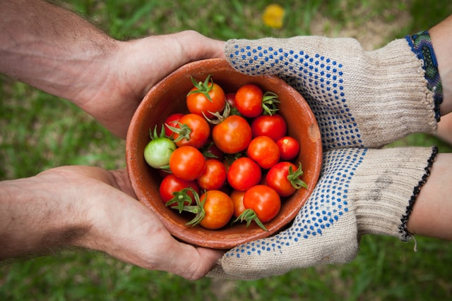
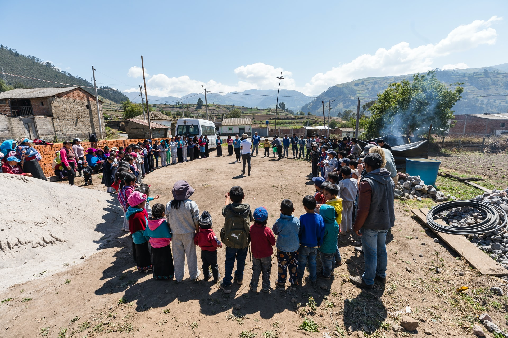

School: Nansidlela
Location: Boekenouthoek
Date: 20 October 2020
Throught the week, Nansidlela senior secondary school, located at Boekenouthoek, decided to give away tomatoes that they have planted through out the year. This was done by the grade 12s, a token of appreciation to the community just before their prelims. These grade 12s clearly know their roots.

School: Dumeleng
Location: Mathyzenloop
Date: 28 December 2020
After a very long year; Dumenleng secondary at Mathys-zen-loop decided to end the year with a banger by giving away food parcels to kids a primary schools. This was a way for them to show the kids which steps they should take growing up and making sure they idolise their brothers and sisters.